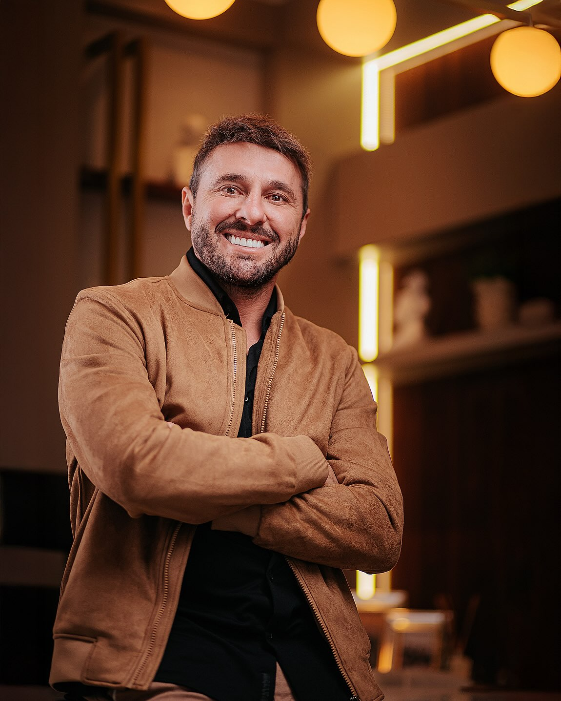
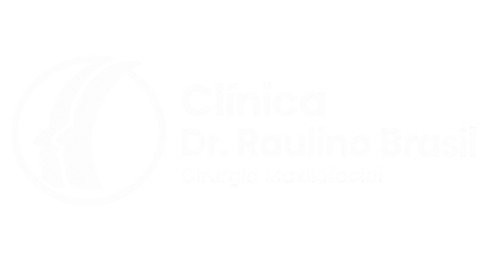

Dr. Raulino Brasil
Especialista em cirurgia facial de alta complexidade.
Cirurgia e traumatologia bucomaxilofacial com avaliação individual, planejamento e estrutura especializada em Santa Catarina.
Quem é
Quem é Raulino Brasil

Guilherme Henrique Raulino Brasil é cirurgião bucomaxilofacial, natural de Palhoça (SC), especializado em procedimentos faciais de alta complexidade, como Deep Plane, Deep Neck, blefaroplastia e lip lifting.
Atua em Palhoça e Araranguá com uma equipe multidisciplinar e é fundador do Projeto Leozinho.
Cirurgias faciais
Planejamento individual para diferentes necessidades da face.
Deep Plane Facelift
Reposiciona o conjunto músculo-cutâneo em bloco. Pode ser associada ao Deep Neck.
Blefaroplastia
Cirurgia das pálpebras, com preservação da abertura natural do olhar.
Lip Lift
Harmonia entre nariz e lábio superior, com incisão desenhada na dobra subnasal.
Cirurgia reconstrutiva
Reconstrução facial em deformidade, paralisia facial, síndromes raras e sequelas.
Cirurgia bucomaxilofacial
A especialidade de base: cirurgia dos ossos e tecidos da face.
Resultados reais
Antes e Depois
Registros cedidos com autorização dos pacientes. Resultados variam conforme anatomia e resposta individual.
{{ resultsCounter }} / 04

Raulino Brasil Academy
Conhecimento construído na prática.
Fellowship presencial, imersões práticas e cursos on-line em anatomia e técnica facial.
Conheça a AcademyProjeto Leozinho
Reconstruir uma face também pode significar reconstruir uma vida.
O Projeto Leozinho nasceu para ampliar o acesso à reconstrução facial de pessoas que enfrentam condições complexas e não possuem recursos para determinados tratamentos.
Léo foi o primeiro paciente operado pela iniciativa. Sua trajetória marcou profundamente o projeto e, como forma de homenagem e de manter viva sua lembrança, a iniciativa passou a levar o nome Projeto Leozinho.